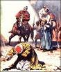

Jesus' Followers Spread the Good News

The Gift of the Holy Spirit
During the forty days that Jesus appeared to His disciples after His resurrection, He had told them not to leave Jerusalem until they had received the gift of the Holy Spirit that had been promised to them. (John 14:16) In the second chapter of the book of Acts, we read the story of Jesus' followers who were doing just that: They had all gathered together when suddenly they heard a mighty roaring, like a violent wind blowing all through the house where they were staying. They saw what appeared to be flames on each person! At that point, they were all filled with the Holy Spirit.
This filling of the Spirit caused them all to begin speaking in other languages. (Acts 2:4)
It just so happened that when Jesus' followers were filled with the Spirit in this way, there were thousands of people from countries all around Israel who had come to Jerusalem to celebrate one of the Jewish feasts. (You can read a list of these countries in Acts 2:8-11.) Miraculously, each of these visitors could hear Jesus' followers telling the good news of salvation through Jesus Christ, spoken in their own language!
The disciple, Peter, gave an especially moving speech about how Jesus, the One who had been crucified for no wrongdoing, is the Son of God. He told the crowd that salvation comes through Jesus. So many in the crowds were moved by what Peter said that over 3,000 people accepted Jesus as the Messiah and as their savior that day!

This day really marks the beginning of the church of believers in Jesus; think of all those new believers going home to their native countries and telling all their friends and family about salvation through Jesus! The number of people who were following "The Way," as the Church was first called, began to grow rapidly all over what is now known as the Middle East and Mediterranean Europe. The book of Acts is the story of how followers of Jesus spread the good news of salvation.

Conversion and Persecution
Remember that it was in Jerusalem that the disciples were filled with the Holy Spirit, and Jerusalem was the very place that telling people about Jesus was most frowned upon: after all, this is where Jesus had been crucified. Persecution from the Jewish leaders who had murdered Jesus was now focused on the new and growing group of Jesus' followers.
Stephen, an outspoken preacher of the Good News of Jesus, was the first follower of The Way to be killed for preaching the gospel. (Acts 6:8-7:60)
A Most Dramatic Conversion
Besides Caiaphas and the other priests who presided over Jesus' mock trial, there was another zealous Jew who made it his life's work to wipe out all of the followers of Jesus. That man's name was Saul of Tarsus.
Saul requested and received permission from the temple priests in Jerusalem to round up and imprison any Jews he could find who were believers in The Way.
Saul was actually traveling to the city of Damascus to search the synagogue there for believers in Jesus when a brilliant light from heaven flashed around him. He fell to the ground and heard a voice ask him, "Saul, why are you persecuting me?" (Acts 9:1-19)
"Who are you?" Saul asked. It was Jesus Himself who was speaking to Saul. God had chosen Saul to bring the good news of Jesus Christ to gentiles (anyone who is not a Jew) everywhere. (Acts 9)
When Jewish followers of Jesus heard that Saul had become a believer in The Way, they couldn't believe it! For him to change from one of their worst persecutors to one of their most eloquent preachers was just too incredible. It was a long time before many of the Jewish believers would trust that Saul actually had been converted. They still feared him for all he had done in the past.
When Saul began his preaching ministry among the gentiles, he began to use the Roman form of his name: Paul. (Saul was the Jewish form of his name).
Paul traveled thousands of miles spreading the gospel of Jesus. You can read of his travels in Acts (Acts 11:25-Acts 28). He suffered much persecution himself because of his preaching and teaching about Jesus. Ultimately, he was arrested and imprisoned in Rome. It was from his prison there that Paul wrote many of the letters to the churches scattered around Europe that are collected in the New Testament. Thanks to Paul's conversion, we have scripture that gives the follower of Jesus instruction and encouragement, hope and assurance. To read the letters of Paul is to learn how to live as a follower of Jesus.